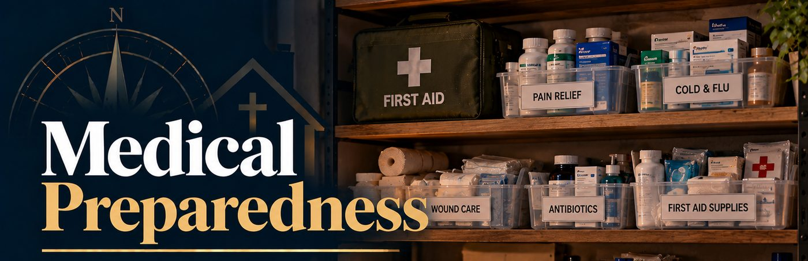

Medical preparedness
Be ready to handle minor injuries and keep important medical information organized if services are interrupted.
What this guide covers
First aid kits
What a household kit should contain, and checking it regularly for expired items.
Emergency medications
Talking with your doctor or pharmacist about keeping an adequate supply of the medications your family relies on.
Basic first aid education
Why hands-on training from organizations like the American Red Cross is worth your time.
Emergency contact lists
Doctors, pharmacies, insurance details and family contacts, written down as well as saved in your phone.
Medical supply organization
Keeping supplies, prescriptions and medical records together and easy to find.
Preparing for interruptions in medical services
Planning ahead for family members with ongoing health needs or medical equipment.
This is general education, not medical advice. Talk with your doctor or pharmacist about medications and health needs, and call 911 in an emergency.
Household Medical and First Aid Preparedness
A practical field guide for organizing medical supplies, maintaining access to care and preparing for emergencies.
- Print it and keep it with your supplies, so it’s there when the power or internet is out
- Medical content always encourages professional guidance. In an emergency, call 911.
- Preparedness content is educational and doesn’t replace guidance from professionals or your local emergency management office